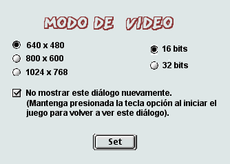

INICIO
INICIO
MODO DE VIDEO
La primera vez que juegue con Cro-Mag Rally, verá el diálogo de modo de video:

El juego se activará con las configuraciones por defecto mencionadas anteriormente. Deberá tener cuidado al cambiar dichas configuraciones debido a que, el cambio de cualquiera de ellas puede requerir mayor cantidad de memoria RAM. Las plataformas Macintosh con sólo 6MB de memoria deberán utilizar las configuraciones mínimas antes mencionadas o no se dispondrá de memoria suficiente para acceder a todos los niveles del juego. Esto afectará también el rendimiento del juego. Cuanta mayor resolución se le asigne al juego, más lento será el desarrollo del mismo.